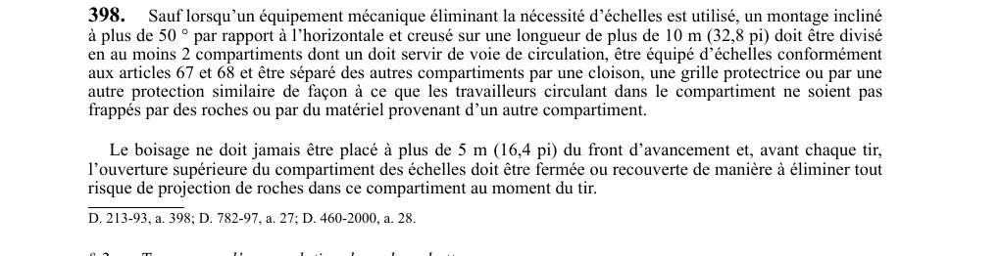

art-398-RSSM : compartiment échelles montage incliné
Sauf si un équipement mécanique rend les échelles inutiles, un montage assez raide et assez long doit comporter une voie de circulation distincte, équipée d'échelles et isolée des compartiments où transitent roches et matériel. Cette obligation vise l'employeur.
- Seuils déclencheurs : inclinaison de plus de 50° par rapport à l'horizontale et longueur creusée de plus de 10 m (32,8 pi).
- Division : au moins 2 compartiments, dont un sert de voie de circulation et reçoit des échelles conformes à art. 67 et art. 68.
- Séparation : cloison, grille protectrice ou protection similaire, pour qu'aucun travailleur circulant dans ce compartiment ne soit frappé par des roches ou du matériel venant d'un autre compartiment.
- Boisage : jamais placé à plus de 5 m (16,4 pi) du front d'avancement.
- Avant chaque tir : l'ouverture supérieure du compartiment des échelles est fermée ou recouverte pour éliminer tout risque de projection de roches.
🌐 LegisQuébec · 📄 PDF officiel
Texte officiel
Sauf lorsqu’un équipement mécanique éliminant la nécessité d’échelles est utilisé, un montage incliné à plus de 50 ° par rapport à l’horizontale et creusé sur une longueur de plus de 10 m (32,8 pi) doit être divisé en au moins 2 compartiments dont un doit servir de voie de circulation, être équipé d’échelles conformément aux articles 67 et 68 et être séparé des autres compartiments par une cloison, une grille protectrice ou par une autre protection similaire de façon à ce que les travailleurs circulant dans le compartiment ne soient pas frappés par des roches ou par du matériel provenant d’un autre compartiment.
Le boisage ne doit jamais être placé à plus de 5 m (16,4 pi) du front d’avancement et, avant chaque tir, l’ouverture supérieure du compartiment des échelles doit être fermée ou recouverte de manière à éliminer tout risque de projection de roches dans ce compartiment au moment du tir.
Texte de l’article 398 RSSM, extrait de la couche texte du PDF officiel (page 100), sans OCR ni retouche. La capture ci-dessous et le PDF font foi.
{kind=link}

Toucher l'image pour l'agrandir🔗 Voir art. 398 RSSM dans le PDF (page 100)
Version : texte officiel du RSSM (RLRQ c. S-2.1, r. 14), à jour au 1er mai 2024 — Éditeur officiel du Québec
Voir aussi
- art. 396 : inspection puits après chute objet · obligation : lorsqu'un objet est tombé dans un puits, les opérations d'extraction doivent cesser immédiatement, les parties du puits et le câble d'extraction susceptibles d'être endommagés doivent être inspectés.
- art. 397 : inscription registre résultats vérifications puits · obligation : le résultat de toute vérification ou inspection prévue aux articles 395 et 396 doit être noté dans le registre du poste de travail concernant les puits.
- art. 399 : interdiction roche abattue soutirage travailleurs · obligation : aucun travailleur ne doit se placer sur la roche abattue susceptible d'être soutirée à moins que des moyens aient été pris pour prévenir l'entraînement des travailleurs par le soutirage du minerai.
- art. 400 : chambre-magasin avertissement soutirage accès zone · obligation : dans les chantiers exploités par la méthode chambre-magasin, les travailleurs dans la chambre doivent être avisés avant chaque soutirage, personne ne doit se trouver dans la zone affectée pendant le soutirage, et tout blocage doit être détecté avant la fin du quart de travail.
- ⚖️ Loi habilitante : LSST
- ↑ Index du bloc : Documents et registres
Pages qui pointent ici (5)
- art-396-RSSM : inspection puits après chute objet Recueil législatif
- art-397-RSSM : inscription registre résultats vérifications puits Recueil législatif
- art-399-RSSM : interdiction roche abattue soutirage travailleurs Recueil législatif
- art-400-RSSM : chambre-magasin avertissement soutirage accès zone Recueil législatif
- RSSM : Documents et registres (art. 380 à 400) Recueil législatif